Idéen
Da vi blev præsenteret for dette tema, vidste jeg med det samme, at jeg ønskede en rød tråd med mit tidligere arbejde i tema 3. Jeg forestillede mig straks, at mit spil skulle centreres omkring bæredygtig mode. Jeg ser et spil om bæredygtig mode som en innovativ måde at informere og gøre bæredygtighed tiltalende for en bredere målgruppe. Et spil har potentiale til at nå en yngre målgruppe, som måske ikke har fået tilstrækkelig oplysning om emnet. Min grafiske inspiration trækker dybt fra barndommens kærlighed til Bratz og udklædningsspil, hvilket afspejles i spillets grafik. Navngivningen af mit spil som "Lotus" er en bevidst beslutning for at bevare den røde tråd fra mit tidligere arbejde, da mit website i tema 3 også bar dette navn. Yderligere har jeg valgt at opretholde brugen af nogle af de samme farvekoder og fonte, hvilket skaber en visuel kontinuitet mellem mine projekter.
Skitser
 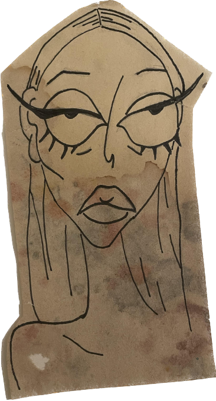
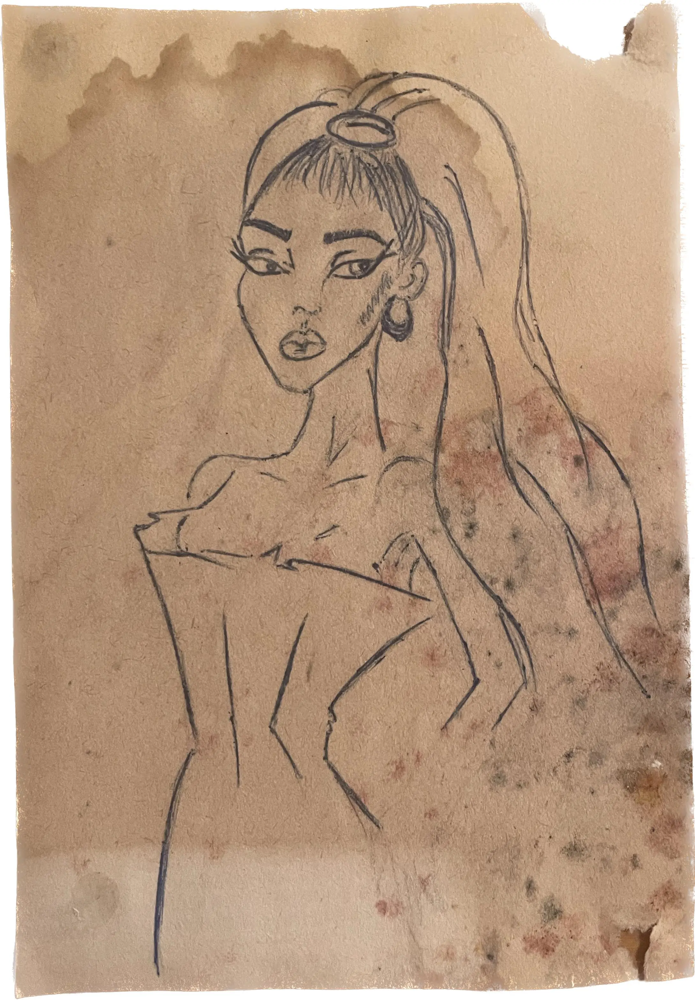
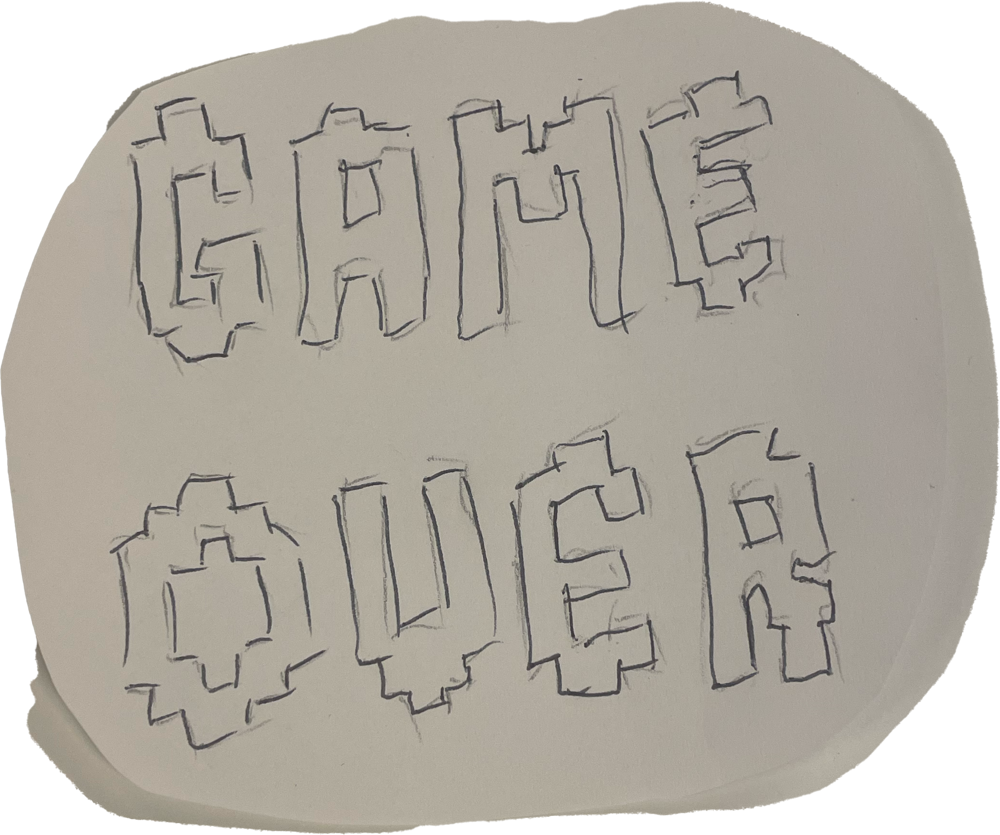
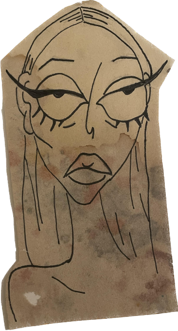
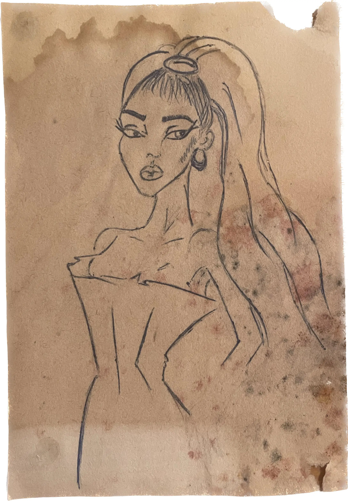
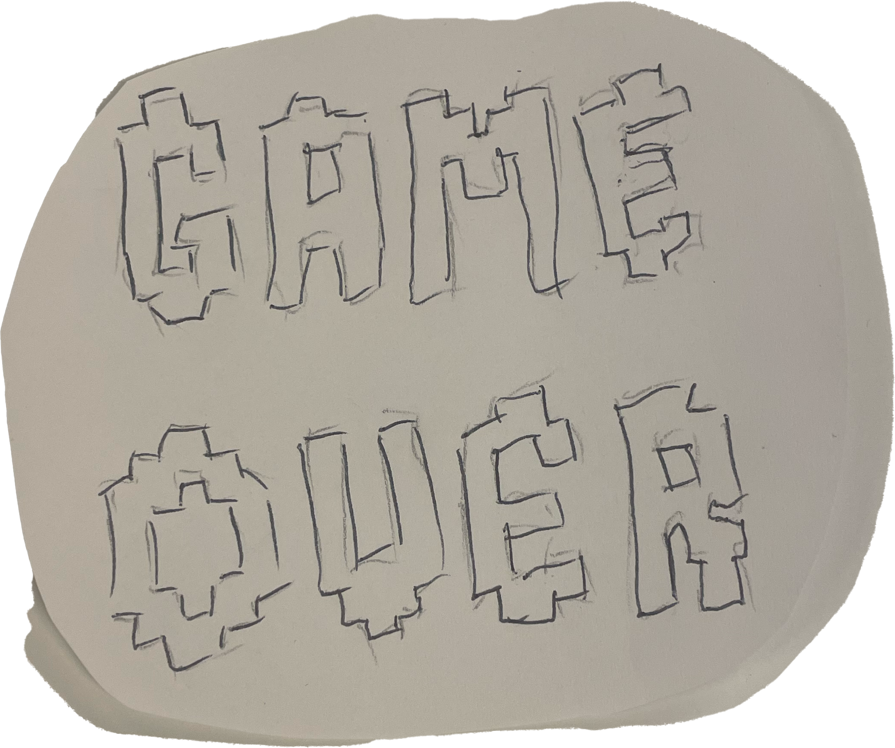
 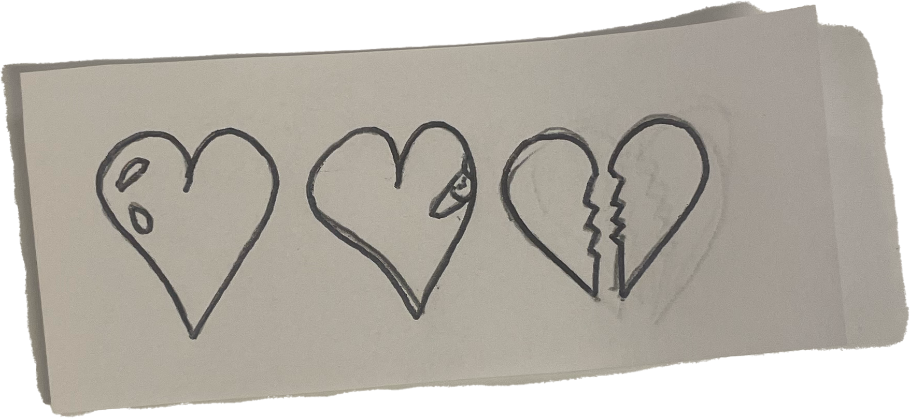
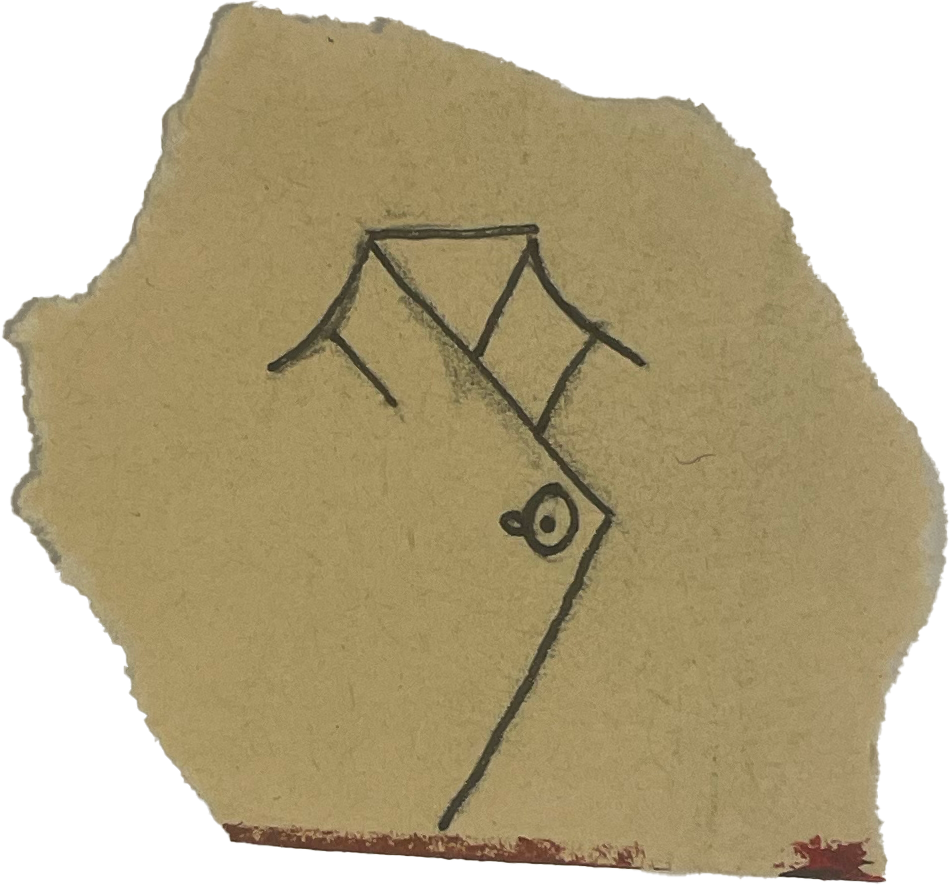
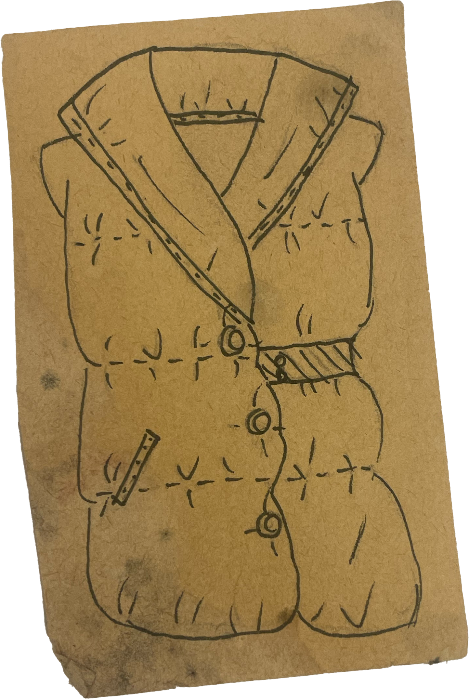
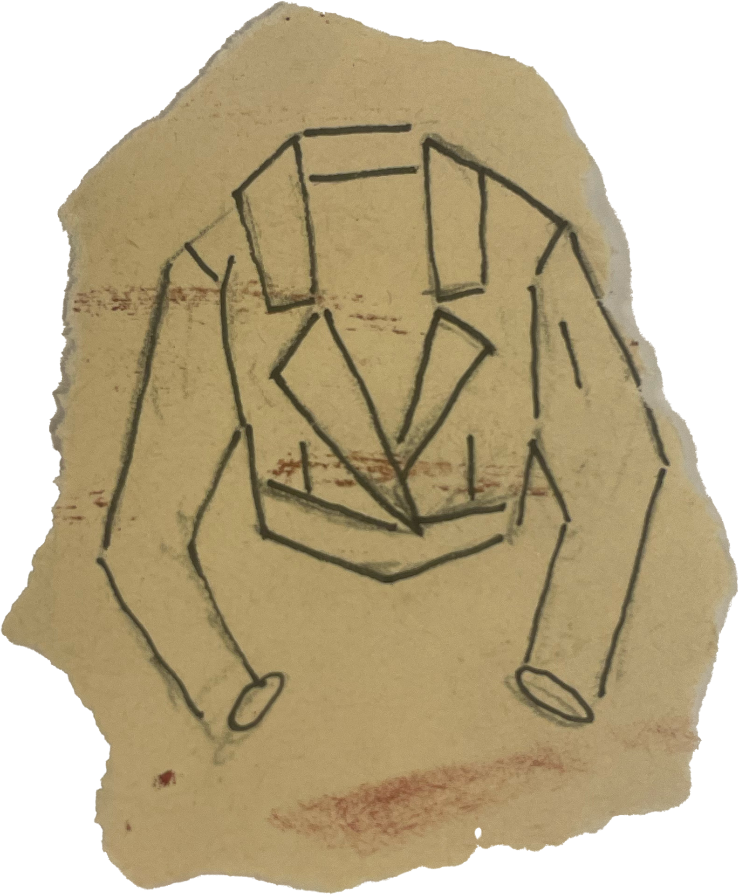
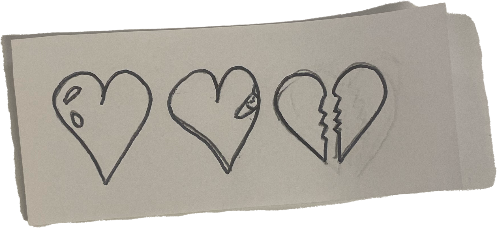
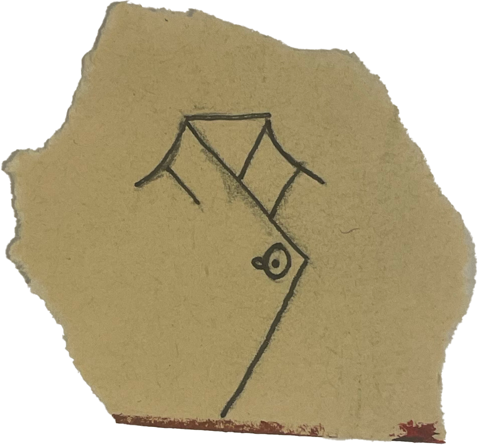
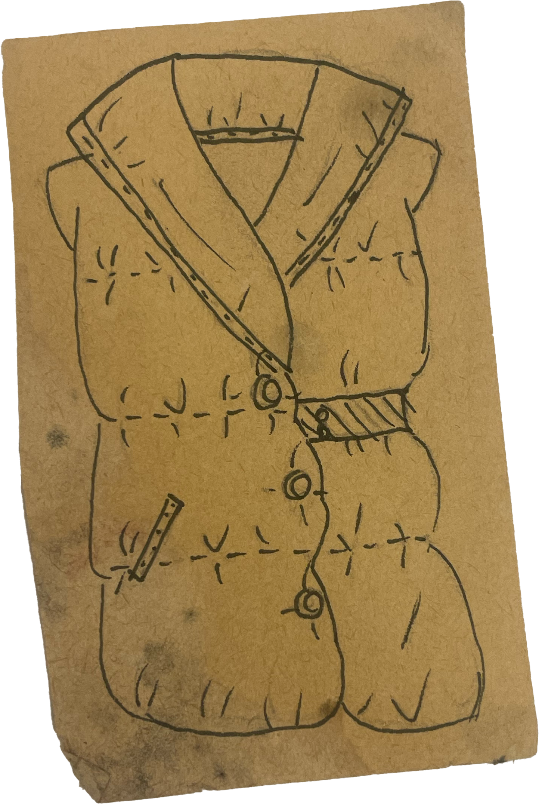
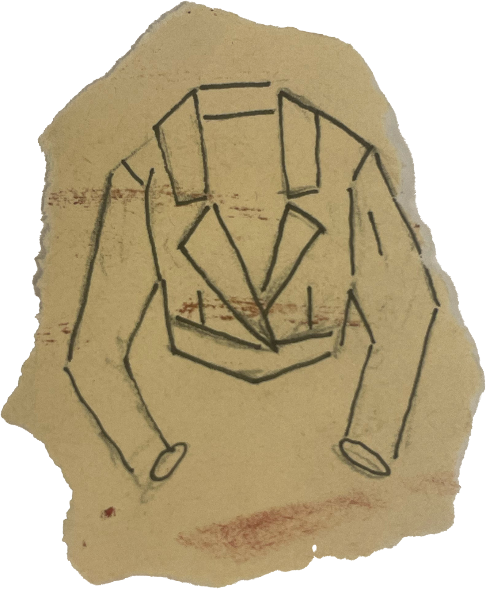